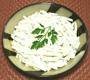

|
Celery Root SaladFrance - Salade de Céleri rave Rémoulade au Citron | ||||
| Serves: Effort: Sched: DoAhead: |
5 salad ** 2 hrs Best |
A very nice easy to make salad, and it's vegetarian as well (well, ovo-lacto vegetarian anyway). | |||
|
1 3 1/2 1 1 1/3 |
# T c t T t |
Celery Root (1) Lemon Juice Mayonnaise (2) Dijon Mustard Parsley Salt |
Make - (2 hr - 15 min work)
|